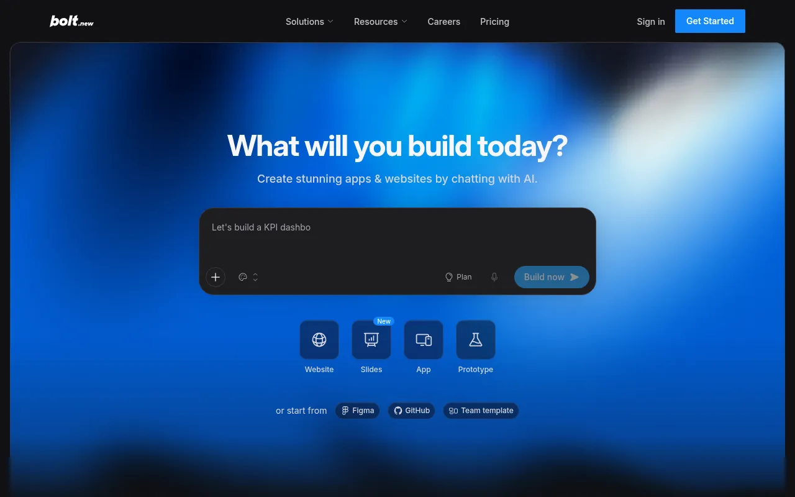
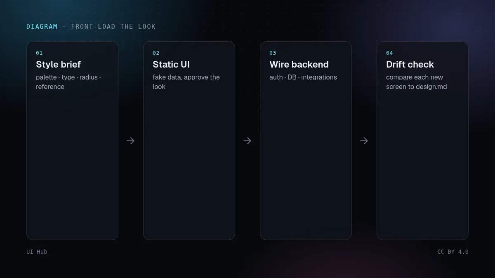
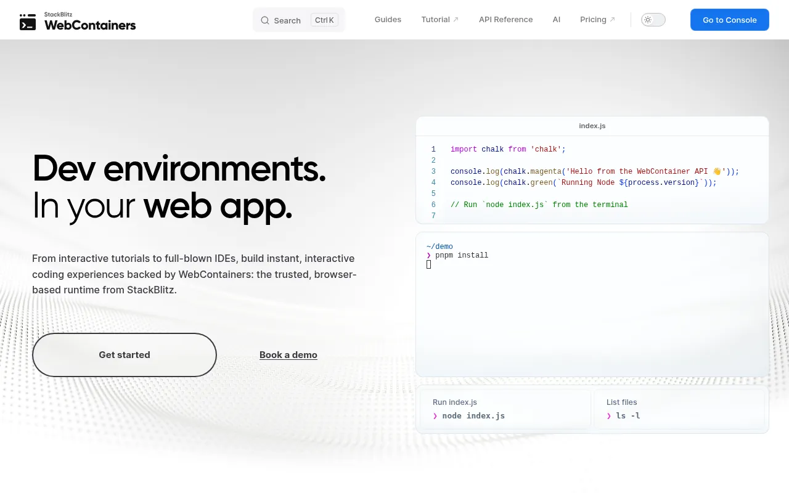

Lovable 和 StackBlitz 的 Bolt 比组件生成器更进一步：你描述一个应用，它们会搭出前端、路由，并通过 Supabase 等集成搭出后端。Bolt 借助 StackBlitz 的 WebContainers 在浏览器里运行开发环境。设计问题也随之改变：模型同时在处理数据结构、登录和部署，你不先做视觉决定，它就会按默认值替你做。

2026 年 10 月 8 日，Lovable 的更新日志写明：对视觉要求开放的提示，首次构建前不再给出三个「设计方向」供选择。现在它直接从你的描述推导外观，只有在提示没说清颜色、字体和布局时才会追问。换句话说：你的提示词现在就是美术需求，不写就是默认样式。
design.md 之类的规范文件，要求每次改动都遵守。

需要快速做出接通真实数据的可用原型时，用这类工具。交付物是要放进现有代码库的精致界面时，用组件生成器（v0、Magic Patterns）或手写。很多团队两者并用：在应用生成器里跑通流程，再用自己的设计系统重做最终界面。